28 Population Graphs

Population Graphs are a statistical representation of among population genetic variance, \(\sigma^2_A\), as viewed through a network (Dyer & Nason 2004). A population graph is a graph-theoretic interpretation of genetic covariance and serves as a tool for understanding underlying evolutionary history for a set of populations.
These structures are estimated in R using the popgraphs library.
library(popgraph)As other networks, a population graph is a graph-theoretic structure that can be represetendHere we will focus on the former approach as it is native to this package. If you use the latter one, it will produce a *.pgraph file and you can read it in using the read_popgraph() function.
28.1 Adding data to a graph
A population graph is made more informative if you can associate some data with topology. External data may be spatial or ecolgoical data associated with each node. Edge data may be a bit more complicated as it is traversing both spatial and ecolgoical gradients and below we’ll see how to extract particular from rasters using edge crossings.
Included in the popgraph package are some build-in data sets to illustrate some of the utility. Included is the cactus topology that was originally used to develop this approach (from Dyer & Nason 2004).
data(lopho)
class(lopho)## [1] "popgraph" "igraph"lopho## IGRAPH UNW- 21 52 --
## + attr: name (v/c), size (v/n), color (v/c), Region (v/c), weight
## | (e/n)
## + edges (vertex names):
## [1] BaC--LaV BaC--Lig BaC--PtC BaC--PtP BaC--SnE
## [6] BaC--SnI BaC--StR Ctv--PtP Ctv--SLG Ctv--SnF
## [11] Ctv--SenBas LaV--Lig LaV--PtC LaV--SnE LaV--SnF
## [16] LaV--TsS Lig--PtC Lig--SnI Lig--StR Lig--TsS
## [21] PtC--SnE PtC--StR PtC--TsS PtC--SenBas PtP--SnF
## [26] PtP--SnI PtP--SenBas SLG--SnF SLG--SnI SnE--StR
## [31] SnE--TsS SnF--SnI SnI--StR StR--TsS StR--SenBas
## + ... omitted several edgesWe can associate data with the nodes using the decorate_graph() function. This takes a data.frame object and tries to match up the columns of data in the data.frame to the nodes. Here is an example with some addition built-in data. The option stratum indicates the name of the column that has the node labels in it (which are stored as V(graph)$name).
data(baja)
summary(baja)## Region Population Latitude Longitude
## Baja :16 BaC : 1 Min. :22.93 Min. :-114.7
## Sonora:13 Cabo : 1 1st Qu.:24.45 1st Qu.:-112.6
## CP : 1 Median :27.95 Median :-111.8
## Ctv : 1 Mean :27.33 Mean :-111.8
## ELR : 1 3rd Qu.:29.59 3rd Qu.:-110.7
## IC : 1 Max. :31.95 Max. :-109.5
## (Other):23lopho <- decorate_graph( lopho, baja, stratum="Population")
lopho## IGRAPH UNW- 21 52 --
## + attr: name (v/c), size (v/n), color (v/c), Region (v/c),
## | Latitude (v/n), Longitude (v/n), weight (e/n)
## + edges (vertex names):
## [1] BaC--LaV BaC--Lig BaC--PtC BaC--PtP BaC--SnE
## [6] BaC--SnI BaC--StR Ctv--PtP Ctv--SLG Ctv--SnF
## [11] Ctv--SenBas LaV--Lig LaV--PtC LaV--SnE LaV--SnF
## [16] LaV--TsS Lig--PtC Lig--SnI Lig--StR Lig--TsS
## [21] PtC--SnE PtC--StR PtC--TsS PtC--SenBas PtP--SnF
## [26] PtP--SnI PtP--SenBas SLG--SnF SLG--SnI SnE--StR
## [31] SnE--TsS SnF--SnI SnI--StR StR--TsS StR--SenBas
## + ... omitted several edgesEach vertex now has seveal different types of data associated with it now. We will use this below.
28.1.1 Plotting a graph using ggplot2 routines
The ggplot2 package provides a spectacular plotting environment in an intuitive context and there are now some functions to support the Population Graphs in this context.
If you haven’t used ggplot2 before, it may at first be a bit odd because it deviates from normal plotting approaches where you just shove a bunch of arguments into a single plotting function. In ggplot, you build a graphic in the same way you build a regression equation. A regression equation has an intercept and potentially a bunch of independent terms. This is exactly how ggplot builds plots, by adding togther components.
To specifiy how things look in a plot, you need to specify an aesthetic using the aes() funciton. Here is where you supply the variable names you use for coordinate, coloring, shape, etc. For both of the geom_*set funcitons, these names must be attributes of either the node or edge sets in the graph itself.
Here is an example using the Lopohcereus graph. We begin by making a ggplot() object and then adding to it a geom_ object. The 5popgraph package comes with two funcitons, one for edges and one for nodes.
library(ggplot2)
p <- ggplot()
p <- p + geom_edgeset( aes(x=Longitude,y=Latitude), lopho )
p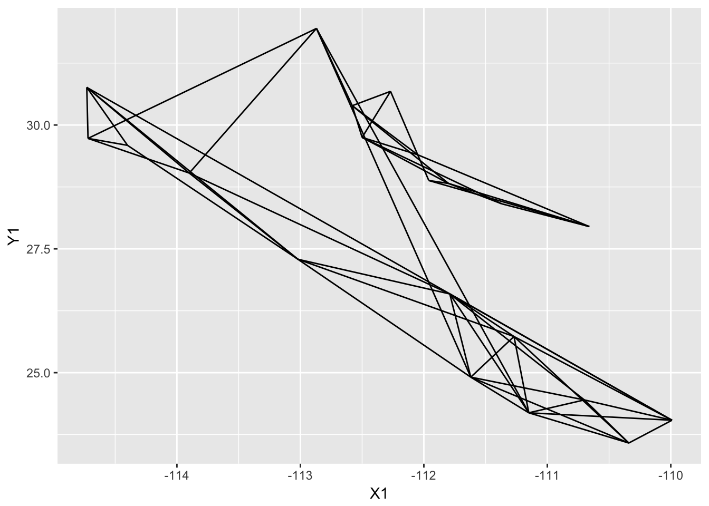
I broke up the plotting into several lines to improve readability, it is not necessary to to this in practice though. The addition of additional geom_ objects to the plot will layer them on top (n.b., I also passed the size=4 option to the plot as the default point size is a bit too small and this is how you could change that).
p <- p + geom_nodeset( aes(x=Longitude, y=Latitude), lopho, size=4)
p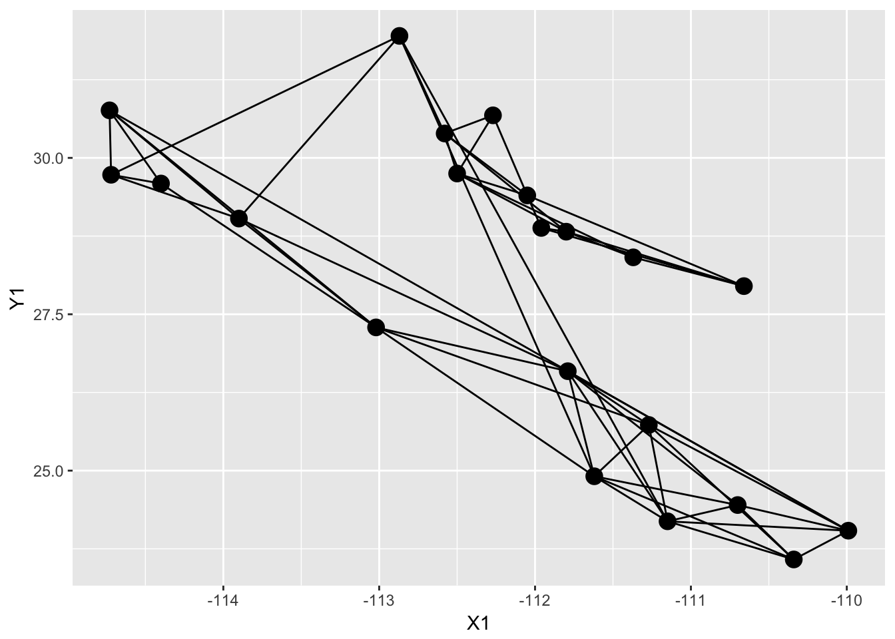
And then you can add additional options to the plot, like axis labels and a less exciting background theme (the theme_empty() provided by popgraph is actually transparent so you can save the image and throw it into a presentation as necessary).
p <- ggplot() + geom_edgeset( aes(x=Longitude,y=Latitude), lopho, color="darkgrey" )
p <- p + geom_nodeset( aes(x=Longitude, y=Latitude, color=Region, size=size), lopho)
p <- p + xlab("Longitude") + ylab("Latitude")
p + theme_empty()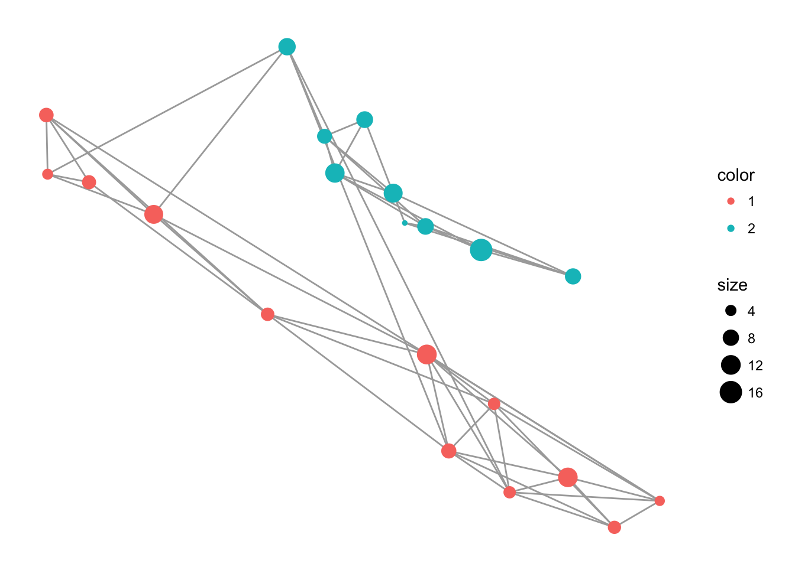
You can also use the default layout routines in igraph for visualization. Here is an example using Fruchterman-Reingold algorithm.
library(igraph)
c <- layout.fruchterman.reingold( lopho )
V(lopho)$x <- c[,1]
V(lopho)$y <- c[,2]
p <- ggplot() + geom_edgeset( aes(x,y), lopho, color="darkgrey" )
p <- p + geom_nodeset( aes(x, y, color=Region, size=size), lopho)
p + theme_empty()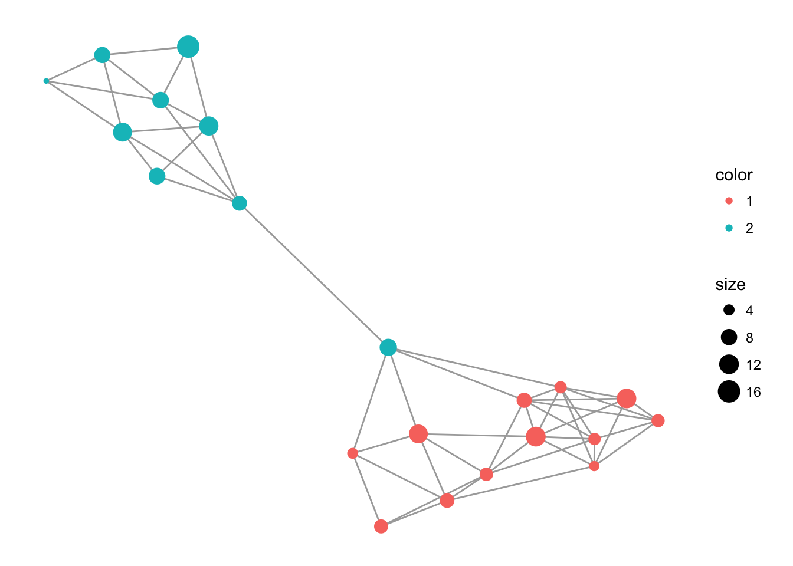
28.1.2 Reading Existing popgraph Files
The online versions of Population Graphs provides a *.pgraph file for visualization. These files are visualized in several different software platforms including GeneticStudio (Dyer 2009), a OpenGL visualization application (Dyer & Nason 2004), an online visualization framework at http://dyerlab.bio.vcu.edu, and of course, in R. We shall focus on this last one. Reading in files to R
graph <- read.popgraph( "thegraph.pgraph" )28.1.3 Saving Population Graph Objects
A popgraph object is a normal R object and can be saved using the normal R mechanisms.
save( lopho, file="MyLophoGraph.rda")For interoperability, popgraph objects can also be saved in other formats. These are accessed through the write.popgraph() function.
write.popgraph(lopho,file="~/Desktop/Cactus.pgraph", format="pgraph")There are several other options available for outputing your graph. Currently the other formats that have been implemented are:
jsonA format for html javascript data processing.
kmlThe Keyhole Markup Language which is read by GoogleEarth. This requiresLatitudeandLongtitudevertex properties.graphmlThe graph markup language.htmlExport as an interactive html document you can manipulate on your desktop (uses javascript d3.js library so you need an internet connection).pajekExport to a format that works with the software Pajek (http://pajek.imfm.si/doku.php?id=pajek)pgraphThe format used in GeneticStudio and the original popgraph 3D viewer (this is the default).adjacencySaves the adjacency matrix of the graph (binary) as a CSV filepathsSaves the shortest paths matrix as a CSV fileweightsSaves the adjacency matrix with edge weights.
28.2 Interactive Networks
To create a popgraph, you need to pass the popgraph() function genotypes as multivariate variables—the function to_mv() does this behind the scene—and a vector of variables that allocate each row of data to a node. Here we use the ‘Population’ vector from the arapat data.frame.
library(gstudio)
library(popgraph)
data(arapat)
graph <- popgraph(to_mv(arapat),groups = arapat$Population)
print(graph)## IGRAPH UNW- 39 71 --
## + attr: name (v/c), size (v/n), weight (e/n)
## + edges (vertex names):
## [1] 101--102 101--32 102--32 12 --161 12 --165 12 --93
## [7] 153--165 153--58 156--157 156--48 156--73 156--75
## [13] 157--48 157--Aqu 157--ESan 159--171 159--173 159--89
## [19] 160--168 160--169 160--93 160--SFr 161--162 161--165
## [25] 161--93 161--SFr 162--64 162--77 162--93 163--75
## [31] 163--Const 163--ESan 164--165 164--169 164--51 164--Const
## [37] 164--SFr 165--168 165--169 165--77 166--168 168--51
## [43] 168--58 168--64 168--77 169--58 169--93 169--SFr
## + ... omitted several edgesThe forceNetwork() function is what does the plotting and it needs some data that are in a specific format. Essentially, there needs to be two data.frame objects with the following attributes:
- nodes - A
data.framewith each row representing the name of the node to be displayed, the group the node belongs to (if there are groupings of nodes to be displayed by alternative colors), and a vector of node sizes.
- edges - A
data.framerepresenting the edge connecting the nodes, labeled as ‘from’ and ‘to’ and a vector of weights.
The ‘from’ and ‘to’ vectors need to be numeric values of the nodes in the other data frame and need to be 0-indexed (e.g., the first node name it is going to look up is indexed as ‘0’ in the javascript instead of ‘1’ as is common in R).
nodes <- to_data.frame( graph, mode="nodes", as.named=FALSE )
edges <- to_data.frame( graph, mode="edges", as.named=FALSE )
edges$source <- edges$source - 1
edges$target <- edges$target - 1 The only last thing to do is to define a grouping of populations. This will be represented in the network as a coloring. For this one, I’m going to use the hypothesized STRUCTURE clustering (see 23 for how this was done). In the arapat data set, there is a designation for each individual on which cluster they belong. Some populations are ‘pure’ in their groupings but others (in spatial regions of sympatry) they are mixed. Below I determine the estimated STRUCTURE groups for each population and collapse those who have more than one into a single string.
grps <- by( arapat$Cluster, arapat$Population, unique )
l <- lapply( grps, function(x) { g <- paste(sort(x),collapse="/") })
df <- data.frame( name=names(l), group=as.character(l))
nodes <- merge( nodes, df )Once defined, we can then call the function to make the data.frame objects and then do the plot. These graphics are interactive, grab a node and drag it around!
library(networkD3)
forceNetwork(Links = edges, Nodes = nodes,
Source = "source", Target = "target",
Value = "value", NodeID = "name",
Group = "group", opacity=1.0,
legend=TRUE, fontSize = 16,
zoom=TRUE )28.3 Spatial Population Graphs
Mapping the nodes and edges onto real space is a key task in the understanding of how covariance is partitioned on the landscape. There are several approaches that can be used in R since it is such a flexible platform. In what follows I will use a series of techniques that I find useful ordered from the simplest to the more complicated.
28.3.1 Integrating Google and ggplot2 for Plotting
R has some pretty good facilities for using spatial assests from Google and OpenStreetMaps and is a very easy way to get quick plots from Population Graphs, particularly if you can integrate it into the ggplot2 framework.
Using the ggmap package, you can request map tiles and use as backgrounds onto which you can plot specific objects. To do so, you must first get:
- Either the centroid of the location you are interested in finding and a value of zoom (just like in google maps), or
- A bounding box with left, bottom, right, top coordinates. This is a bit of an experimental thing and does not always get you what you want.
Some fiddling is required with either way you go. The map you get from get_map() is essentially a huge matrix of hex colors as shown above.
library(ggmap)
location <- c( mean(V(lopho)$Longitude), mean(V(lopho)$Latitude))
location## [1] -112.17571 27.91048map <- get_map(location,maptype="satellite", zoom=6)
dim(map)## [1] 1280 1280map[1:4,1:4]## [,1] [,2] [,3] [,4]
## [1,] "#3C5283" "#3C5283" "#3C5283" "#3C5283"
## [2,] "#3C5283" "#3C5283" "#3C5283" "#405285"
## [3,] "#3C5283" "#3C5283" "#40558A" "#40558A"
## [4,] "#3C5283" "#3C5283" "#3C5283" "#40558A"This map object can be passed on to ggmap(), which replaces the traditional ggplot() funciton and sets up the bounding box in terms of Latitude and Longtidue. Onto this, you can plot the graph topologoy using:
geom_edgeset()This takes the graph and plots out the edges.
geom_nodeset()This plots out the nodes. You could probably use a regular data.frame andgeom_point()as well. Here is an example:
p <- ggmap( map )
p <- p + geom_edgeset( aes(x=Longitude,y=Latitude), lopho, color="white" )
p <- p + geom_nodeset( aes(x=Longitude, y=Latitude, color=Region, size=size), lopho)
p + xlab("Longitude") + ylab("Latitude")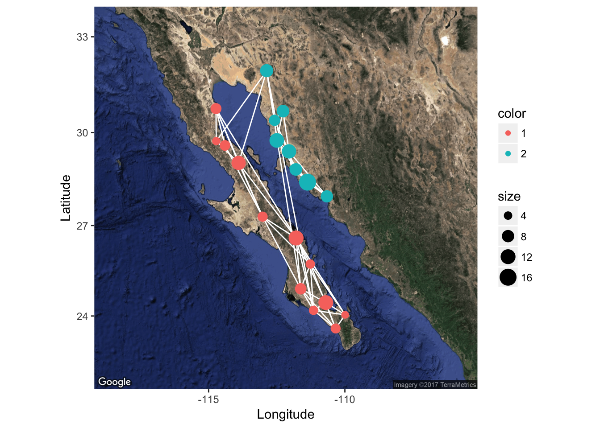
28.3.2 Integrating Raster Maps
At times we have raster data upon we can plot a population graph. Here is an example from Baja California. The underlying raster image is croped from a WorldClim tile and represents elevation.
library(raster)
data(alt)
plot(alt)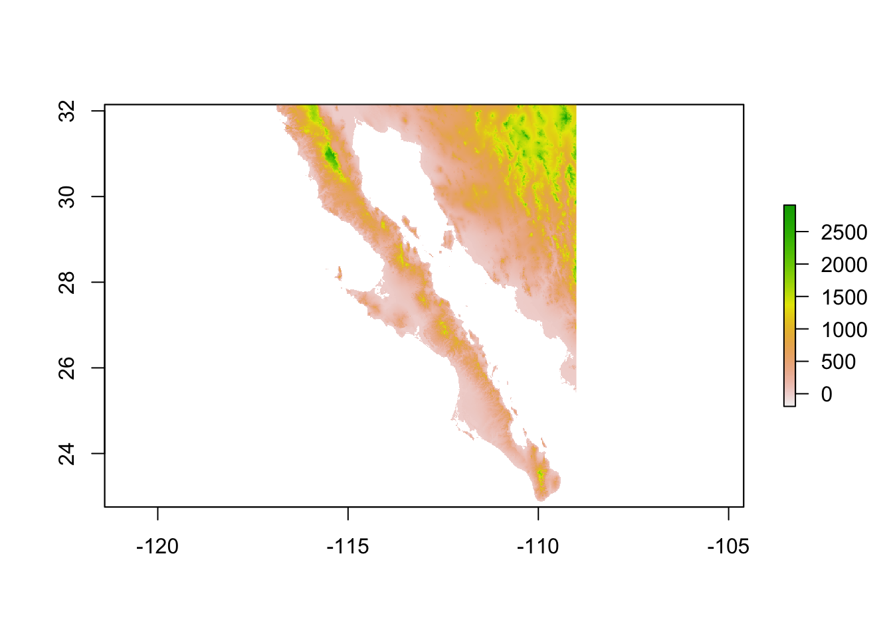
Since it is a raster object, it knows how to plot itself relatively well. There are a ton of good references for showing you how to play with raster data (e.g., Bivand et al. 2008)
To plot our graph onto this topology, we export the spatial components of the graph into objects that interact with rasters. The packages provides simple extraction of features into SpatialLines and SpatialPoints objects.
lopho.nodes <- to_SpatialPoints(lopho)
lopho.nodes## class : SpatialPoints
## features : 21
## extent : -114.73, -109.99, 23.58, 31.95 (xmin, xmax, ymin, ymax)
## coord. ref. : NAlopho.edges <- to_SpatialLines(lopho)
head(lopho.edges)## class : SpatialLines
## features : 1
## extent : -111.79, -109.99, 24.04, 26.59 (xmin, xmax, ymin, ymax)
## coord. ref. : NAOnce we have them extracted into the right format, we can add them to the raster plot. I plot the nodes twice to overlay a circular icon (pch=16) onto the default cross marker and make them 50 % larger (cex=1.5).
plot( alt )
plot( lopho.edges, add=TRUE, col="#555555" )
plot( lopho.nodes, add=TRUE, col="black", cex=1.5 )
plot( lopho.nodes, add=TRUE, col=V(lopho)$color, pch=16, cex=1.5 )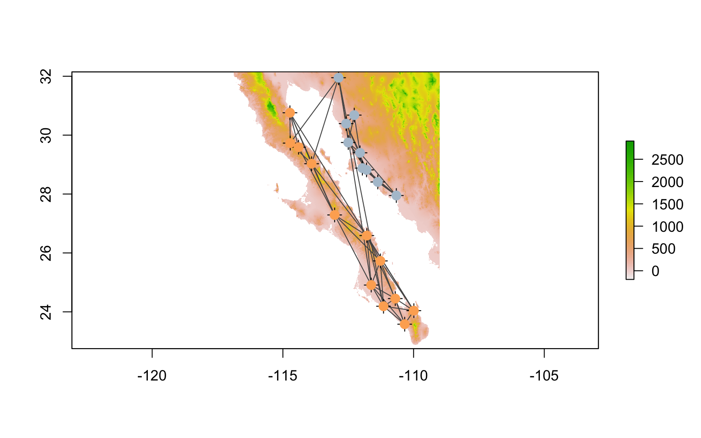
28.4 Extracting Spatial Data Using Population Graphs
Since we are dealing with the spatial stuff right now, it makes sense to look into how we can use the topological features of the graph to extract spatial data.
28.4.1 Node Specific Data
The node data nodes is a SpatialPoints object and can be used to pull data from raster sources. I’ll start by creating a data.frame with some existing data in it.
df.nodes <- data.frame(Pop=V(lopho)$name, Latitude=V(lopho)$Latitude, Longitude=V(lopho)$Longitude)Then we can extract the elevation from the alt raster as:
library(raster)
df.nodes$Elevation <- extract( alt, lopho.nodes )
summary(df.nodes)## Pop Latitude Longitude Elevation
## BaC : 1 Min. :23.58 Min. :-114.7 Min. : 5.0
## CP : 1 1st Qu.:25.73 1st Qu.:-112.9 1st Qu.: 14.0
## Ctv : 1 Median :28.82 Median :-112.0 Median : 66.0
## LaV : 1 Mean :27.91 Mean :-112.2 Mean :159.2
## LF : 1 3rd Qu.:29.73 3rd Qu.:-111.3 3rd Qu.:259.0
## Lig : 1 Max. :31.95 Max. :-110.0 Max. :667.0
## (Other):15Additional data could be extracted from other rasters. See http://worldclim.org for some example data that may prove useful.
28.4.2 Extracting Data Along Popgraph Edges
It is also possible to extract data along vectors, or other SpatialLines objects, which the edges in a popgraph can be tranformed into. This is a particularly helpful approach if you are trying to quantify the value of characteristics of the environment between your sampling locations. In the following example, I estimate the popualtion graph from the arapat data set
coords <- strata_coordinates(arapat)
graph <- decorate_graph( graph, coords )
edges <- to_SpatialLines(graph)
proj4string(edges) <- CRS( proj4string( alt ))
plot( alt, legend=FALSE)
plot(edges,add=TRUE)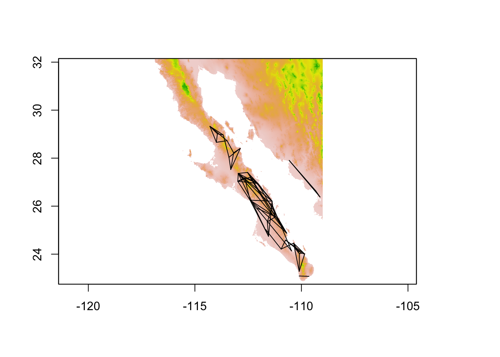
and determine which of the edges has the longest length.
edge_lengths <- SpatialLinesLengths( edges )
longest <- sort( edge_lengths,decreasing = TRUE )[1]
longest## Edge 164 SFr
## 322.8491This edge is found at:
idx## Edge 164 SFr
## 37edge <- edges[ 37 ]
edge## class : SpatialLines
## features : 1
## extent : -112.964, -111.5441, 24.74642, 27.3632 (xmin, xmax, ymin, ymax)
## coord. ref. : +proj=longlat +datum=WGS84 +no_defs +ellps=WGS84 +towgs84=0,0,0plot( alt, legend=FALSE)
plot(edge,add=TRUE)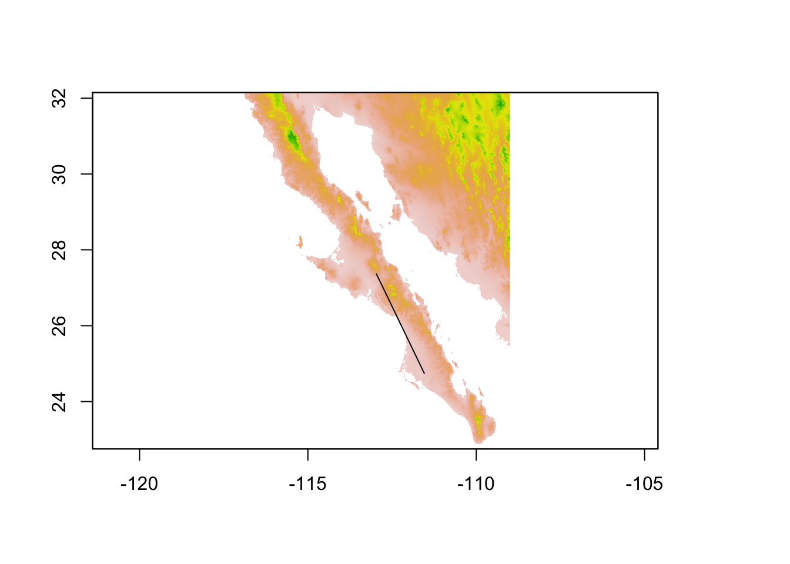
From this edge object (or a collection of edge objects) we can again extract values from a raster. Here I pull out the elevation profile of this edge. To plot it, I need to make a sequence of latitude values equal in length to that of the observed elevation values I extracted.
elev <- extract( alt, edge )[[1]]
from_lat <- V(graph)$Latitude[V(graph)$name == "SFr"]
to_lat <- V(graph)$Latitude[ V(graph)$name == "164"]
lat <- seq( from=from_lat, to=to_lat, length.out = length(elev) )
df <- data.frame( Latitude=lat, Elevation=elev)
p <- ggplot( df, aes(Latitude,Elevation)) + geom_line(color="lightgrey")
p + geom_point() + ylab("Elevation (m)")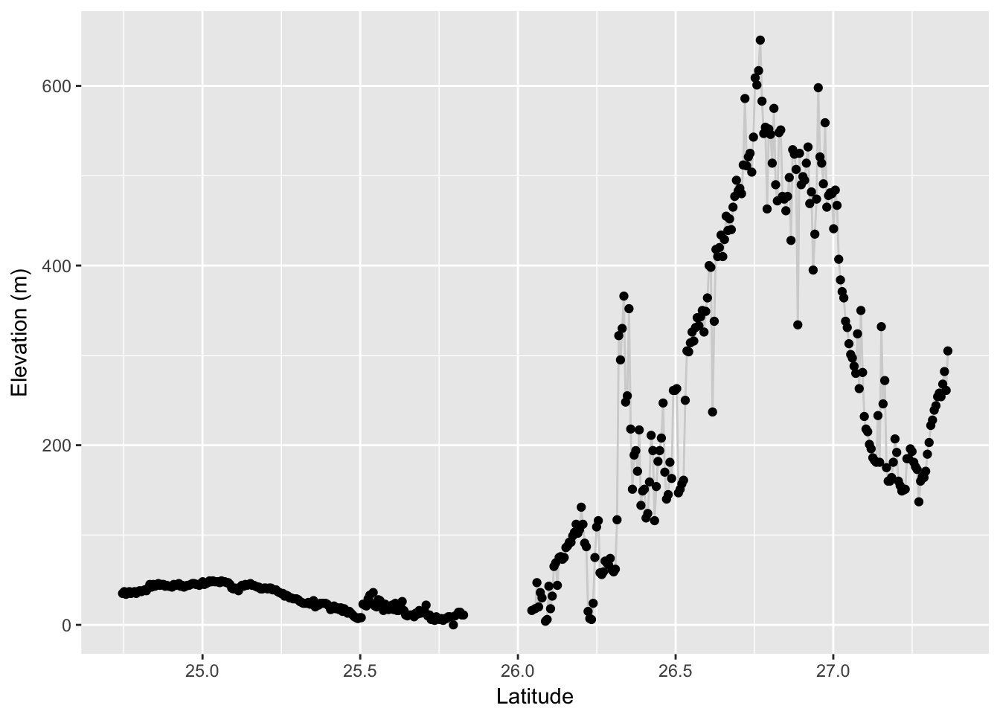
Population Graphs have been used to determine if there is an preference (or avoidance) of a specific raster value for the location of individual edges on the landscape. For example, Dyer et al. (2012) were interested in determining if there the edge in the pollination graph (e.g., a population graph constructed from male pollen haplotypes) preferentially traverse (or avoid) specific intervening habitat features. To do this, they permuted the edge set among nodes in the graph and recorded the prevalence (mean and variance) of specific features extracted from specific categorical rasters representing both canopy and understory features. The permutation of a network should be done such that you preserve aspects of the spatial heterogeneity and spatial arrangement of the nodes on the landscape. You probably do not want to permute all edges randomly in the graph (though this option is available in the code), but would probably be better served by permuting the network while maintaining both the node coordinates (e.g., where they exist on the landscape) as well as the degree distribution of the overall network. This second criteria holds constant higher network structure. The general idea is to:
- Create a saturated graph and extract ecological features for all potential connections. This gives us a
data.framewithin which we can pull out ecological values for each permutation. This is the most computationally intensive process and doing it once and then extracting values from thedata.framefor each permutation is a more efficient approach. - Once you have all the potential values of your features, you can permute the observed matrix, while holding both the connection probability (e.g., the number of edges) and the degree distribution (e.g., the amount of edges connected to nodes) constant using the
randomize_graphfunction included in thepopgraphlibrary. For each permutation, you then compile the permuted environmental factor as a null distribution and then compare those to the observed.
This may sound a bit convoluted, but this example may help. Consider the hypothetical case where we think that the edges in the population graph from Figure ??, are restricted in elevation because we believe that dispersing insects fly around high elevation mountains rather than over them.5 If this is true, then we should expect that the average (or max) elevation along any of the observed edges in the Population Graph would be less than what would be expected if we permuted the edges among nodes and measured elevation along edges from permuted graphs.
First, we need to set up the network and extract values of elevation along all potential edges. I make a saturated graph from all potential
data(baja)
graph <- popgraph( to_mv( arapat ), arapat$Population )
graph <- decorate_graph( graph, coords )
allpops <- V(graph)$nameI then can make an adjacency matrix connecting all pairs of populations
A <- matrix(1,nrow=length(allpops),ncol=length(allpops))
diag(A) <- 0
rownames(A) <- colnames(A) <- allpops
saturated_graph <- graph.adjacency(A, mode = "undirected")
saturated_graph <- as.popgraph( saturated_graph )From which I can pull all the edges (all 741 of them) as SpatialLines objects
saturated_graph <- decorate_graph( saturated_graph, coords )
all_edges <- to_SpatialLines( saturated_graph )From these 741 SpatialLines objects, we can extract data from the elevation raster.
edge_values <- extract( alt, all_edges, fun=max, na.rm=TRUE, df=TRUE)This will take a bit of time to complete. The options that I provided were:
- fun=max - The function used is the max function. - na.rm=TRUE - Ignore all missing data (e.g., when an edge crosses water on the alt raster, the extracted values are NA) - df=TRUE - Return the answer as a data.frame object instead of just a vector.
This data.frame has two columns, one for edge number and the other for value. I’m going to put an additional pair of columns with the names of the nodes the edges are connected to into this data.frame
edge_names <- as_edgelist( saturated_graph )
edge_values$Nodes <- paste( edge_names[,1], edge_names[,2], sep="-")
head(edge_values)## ID alt_22 Nodes
## 1 1 25 101-102
## 2 2 906 101-12
## 3 3 31 101-153
## 4 4 72 101-156
## 5 5 1079 101-157
## 6 6 1361 101-159This constitutes all potential connections across the landscape. From this we can extract the edges that we observed in the original Population Graph
e <- as_edgelist( graph )
obs <- edge_values$alt_22[ edge_values$Nodes %in% paste( e[,1], e[,2], sep="-") ]
mean(obs)## [1] 744.5634We can now permute the network a moderate number of times and take the values of permuted elevation to see if our observed are smaller than all potential elevations for this specific network.
perm_elev <- rep(NA,999)
for( i in 1:length(perm_elev) ) {
perm_graph <- randomize_graph( graph )
e <- as_edgelist( perm_graph )
perm_val <- edge_values$alt_22[ edge_values$Nodes %in% paste( e[,1], e[,2], sep="-") ]
perm_elev[i] <- mean(perm_val)
}Now, we can see where the observed value occurs in the distribution of elevations created under the null hypothesis of no difference in elevation across edges.
df <- data.frame( Elevation=c(mean(obs),perm_elev), Category=c("Observed",rep("Permuted",999)))
ggplot( df, aes(x=Elevation,fill=Category)) + geom_histogram(stat="bin", bins=40) + xlab("Elevation (m)") + ylab("Distribution of Permuted Elevations")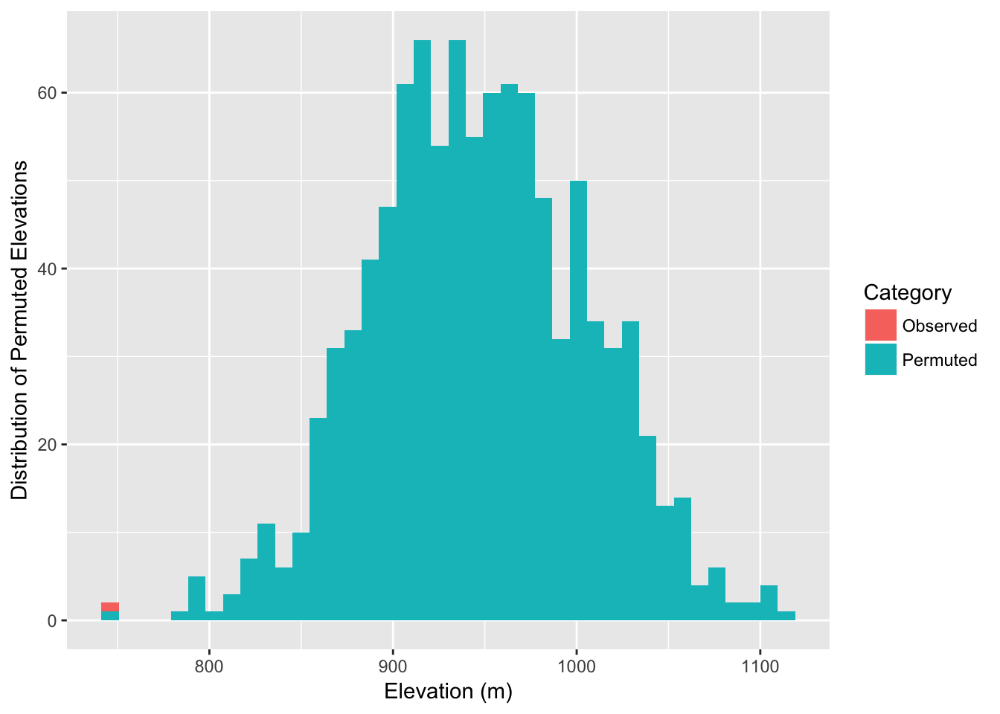
In fact, we can estimate the probablity as:
sum( mean(obs) >= perm_elev )## [1] 1As it turns out, the observed edges do in fact appear to be traversing lower elevations than the potential set of edges that could be present (while controlling for spatial location of populations and graph structure).
28.5 Extracting Graph-Theoretic Parameters
The underlying structure of a popgraph object is based upon the igraph package from Gabor Csardi. A population graph is essentially a specific kind of igraphobject and can be decorated with metadata that is useful for spatial population genetic analyses. As such, there is a wealth of existing analyses from both the igraph as well as the sna packages that can be used on popgraph objects. Here are some examples.
28.5.1 Matrix Representations of Population Graph Objects
A graph topology is a graphical representation of a matrix and there are several reasons why you may want to use these matrices. The function to_matrix() is an easy front-end to several kinds of matrices. Matrix structure itself can be defined by adjacency matrics, either binary (the default) or weighed by the edge weight. Several graph-theoretic parameters are derived from the adjacency matrix. Here is an example from our little graph that started this document.
to_matrix( lopho, mode="adjacency")[1:5,1:5]## BaC Ctv LaV Lig PtC
## BaC 0 0 1 1 1
## Ctv 0 0 0 0 0
## LaV 1 0 0 1 1
## Lig 1 0 1 0 1
## PtC 1 0 1 1 0to_matrix( lopho, mode="edge weight")[1:5,1:5]## BaC Ctv LaV Lig PtC
## BaC 0.000000 0 9.052676 9.71615 12.38248
## Ctv 0.000000 0 0.000000 0.00000 0.00000
## LaV 9.052676 0 0.000000 12.07282 12.80017
## Lig 9.716150 0 12.072820 0.00000 14.22483
## PtC 12.382480 0 12.800170 14.22483 0.00000In addition to who each node is connected to, it is often of interest to know the length of the shortest path through the matrix connecting nodes. Here is a slightly larger example, using the cactus data so we can look at isolation by graph distance.
cGD <- to_matrix( lopho, mode="shortest path")
cGD[1:5,1:5]## BaC Ctv LaV Lig PtC
## BaC 0.000000 9.195038 9.052676 9.71615 12.38248
## Ctv 9.195038 0.000000 13.083311 15.23302 20.49099
## LaV 9.052676 13.083311 0.000000 12.07282 12.80017
## Lig 9.716150 15.233023 12.072820 0.00000 14.22483
## PtC 12.382480 20.490990 12.800170 14.22483 0.00000It should be noted that the shortest distance through a population graph is defined as the parameter \(cGD\), conditional graph distance (see Dyer et al. 2010 for more information on this parameter).
Now, we need the physical distance between the nodes. If the physical size of the sampling area is small we could just use the Pythagorean equation. However, here the distance is relatively large and the curvature of the earth may be of interest to take into account. There are seveal functions that will calculate ‘great circle distance’ but the easiest is rdist.earth() from the fields funtion.
library(gstudio)
df <- data.frame( Stratum = V(lopho)$name,
Longitude =V(lopho)$Longitude,
Latitude = V(lopho)$Latitude )
pDist <- strata_distance( df )Now, we can plot these values against each other to see if there is a pattern of ‘isolation by distance’ captured in the graph topology. To do this, I extract only the upper triangle (e.g., the values above the diagonal of each matrix) because they are symmetric matrices and we do not want to look at each datum twice.
df <- data.frame( cGD=cGD[upper.tri(cGD)], Phys=pDist[upper.tri(pDist)])
cor.test( df$Phys, df$cGD, method="spearman")##
## Spearman's rank correlation rho
##
## data: df$Phys and df$cGD
## S = 729990, p-value < 2.2e-16
## alternative hypothesis: true rho is not equal to 0
## sample estimates:
## rho
## 0.5270434We can plot these values and make a trendline pretty easily. Here is a plot using ggplot2 (a very nice plotting library; you could use plot() to do the normal plotting but I think ggplot2 does such a nice job I encourage its use).
qplot( Phys, cGD, geom="point", data=df) + stat_smooth(method="loess") + xlab("Physical Distance") + ylab("Conditional Genetic Distance")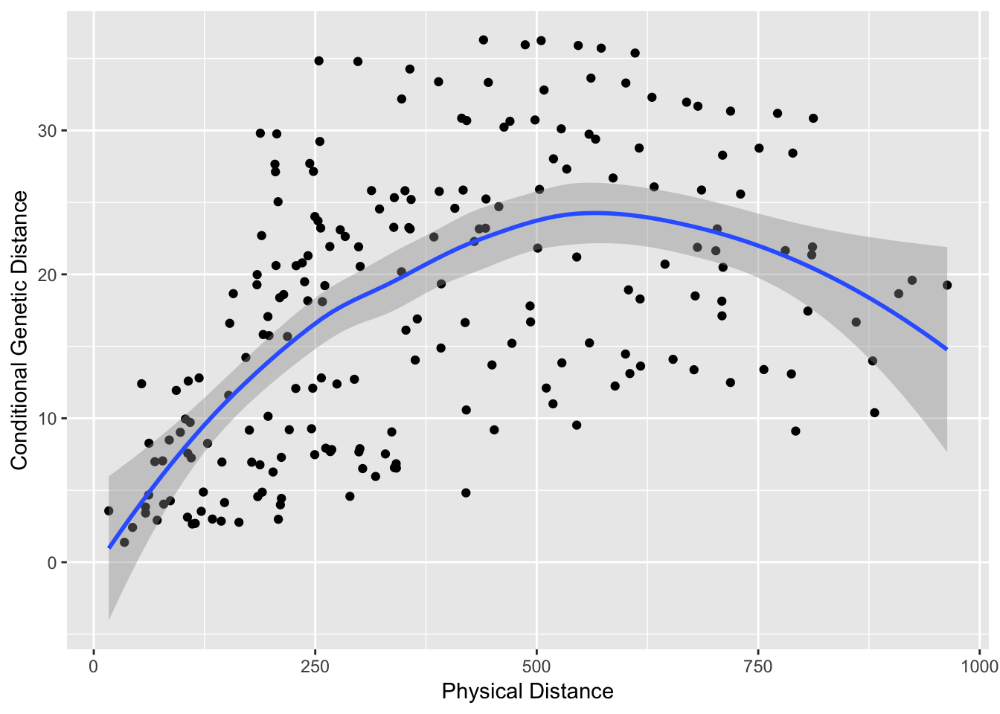
The trendline is the loess predicted line with confidence interval.
28.5.2 Node Specific Parameters
Features of the topology can be extracted as either properties of the nodes or the edges. Node properties may provide insights into localized processes (e.g., a ‘sink’ population). There are a lot of different parameters that can be derived and several packages in R that help out. Here are some basic ones.
df.nodes$closeness <- closeness(lopho)
df.nodes$betweenness <- betweenness(lopho)
df.nodes$degree <- degree( lopho )
df.nodes$eigenCent <- evcent( lopho )$vector
df.nodes$Region <- factor(V(lopho)$Region)
summary(df.nodes,color="Region")## Pop Latitude Longitude Elevation
## BaC : 1 Min. :23.58 Min. :-114.7 Min. : 5.0
## CP : 1 1st Qu.:25.73 1st Qu.:-112.9 1st Qu.: 14.0
## Ctv : 1 Median :28.82 Median :-112.0 Median : 66.0
## LaV : 1 Mean :27.91 Mean :-112.2 Mean :159.2
## LF : 1 3rd Qu.:29.73 3rd Qu.:-111.3 3rd Qu.:259.0
## Lig : 1 Max. :31.95 Max. :-110.0 Max. :667.0
## (Other):15
## closeness betweenness degree eigenCent
## Min. :0.002202 Min. : 0.00 Min. :3.000 Min. :0.0005975
## 1st Qu.:0.002466 1st Qu.: 0.00 1st Qu.:4.000 1st Qu.:0.0040621
## Median :0.002919 Median : 4.00 Median :5.000 Median :0.1514600
## Mean :0.002891 Mean :17.43 Mean :4.952 Mean :0.3043499
## 3rd Qu.:0.003227 3rd Qu.:25.00 3rd Qu.:6.000 3rd Qu.:0.6687298
## Max. :0.003844 Max. :98.00 Max. :7.000 Max. :1.0000000
##
## Region
## 1:12
## 2: 9
##
##
##
##
## The relationship betwwen the node variables can be evaluated in a pair plot.
library(GGally)
ggpairs(df.nodes,columns=2:9, color='Region')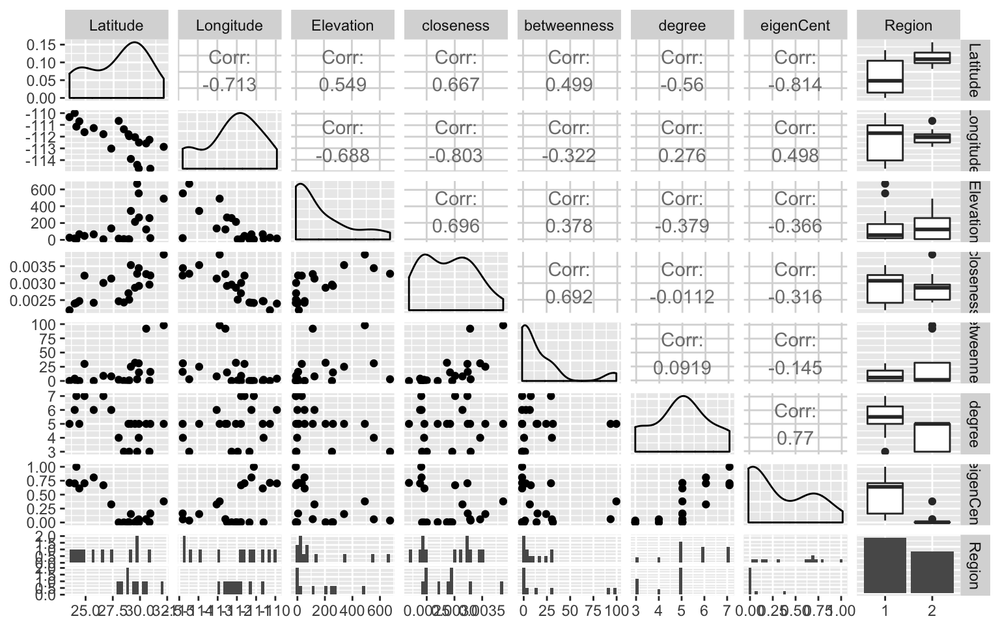
28.5.3 Edge Specific Parameters
Edges may have specific properties as well. Here are some examples using betweeness centrality, community, and regionality (if the edge connects within Baja or Sonora or crosses the Sea of Cortéz).
df.edge <- data.frame( Weight=E(lopho)$weight )
df.edge$betweenness <- edge.betweenness(lopho)
df.edge$Region <- rep("Baja",52)
df.edge$Region[36:52] <- "Sonora"
df.edge$Region[c(11,24,27,35)] <- "Cortez"
ggpairs(df.edge, color="Region")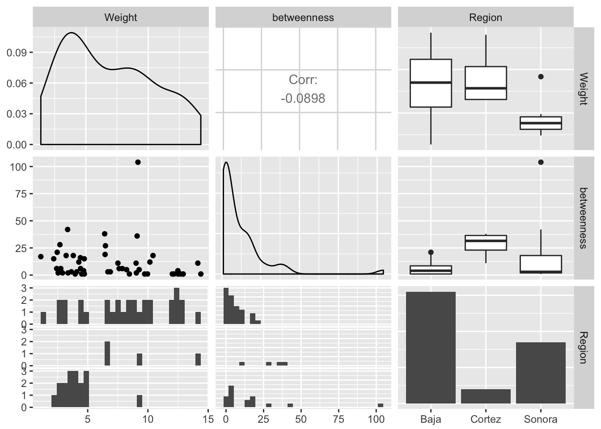
28.6 Testing for Topological Congruence
If you have more than one topology and the node sets overlap sufficiently, you can test for the topological congruence of the two. There are several specific reasons why population graph topologies may be congruent. In this section we use the spatial genetic structure of the Senita cactus (Lophocereus schottii) and its obligate pollinator, Upiga virescens as an example. This is an obligate pollination mutualism and as such we should expect there to be some degree of spatial genetic congruence between the species due to this co-evolution.
data(upiga)
upiga <- decorate_graph(upiga,baja,stratum="Population")
upiga.nodes <- to_SpatialPoints(upiga)
upiga.edges <- to_SpatialLines(upiga)These two data sets were ‘mostly’ collected in the same physical locations. Here is a comparison of the two topologies.
par(mfrow=c(1,2))
plot(lopho)
plot(upiga)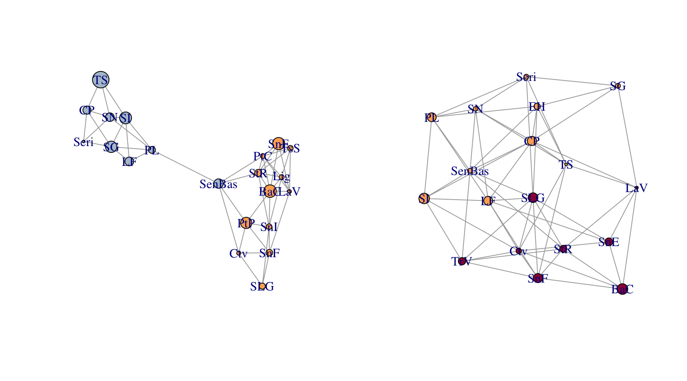
You can clearly see some differences in both the node and edge sets. However, given the relationship between these organisms, there is an expectation that they should share some spatial structure. The function congruence_topology() is designed to extract the congruence graph that is the intersection of both node and edge sets. If the node sets are not completely overlapping (in this case they are not), it will give you a warning. If you want to compare topologies, you must start with identical node sets because the topology in a Population Graph is based upon the entire structure, not just pairwise differences. See the writeup about the gstudio package for more information on this.
cong <- congruence_topology(lopho,upiga)
plot(cong)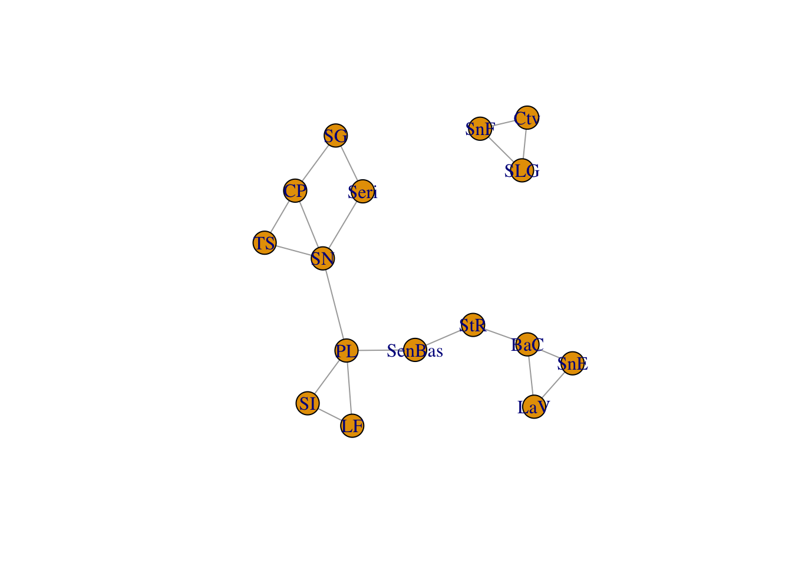
We can then take the congruence graph and plot it or work with it in the normal fashion.
cong <- decorate_graph( cong, baja )
cong.nodes <- to_SpatialPoints(cong)
cong.edges <- to_SpatialLines(cong)
plot(alt)
plot(cong.edges,add=T)
plot(cong.nodes,add=T, pch=16, col="red")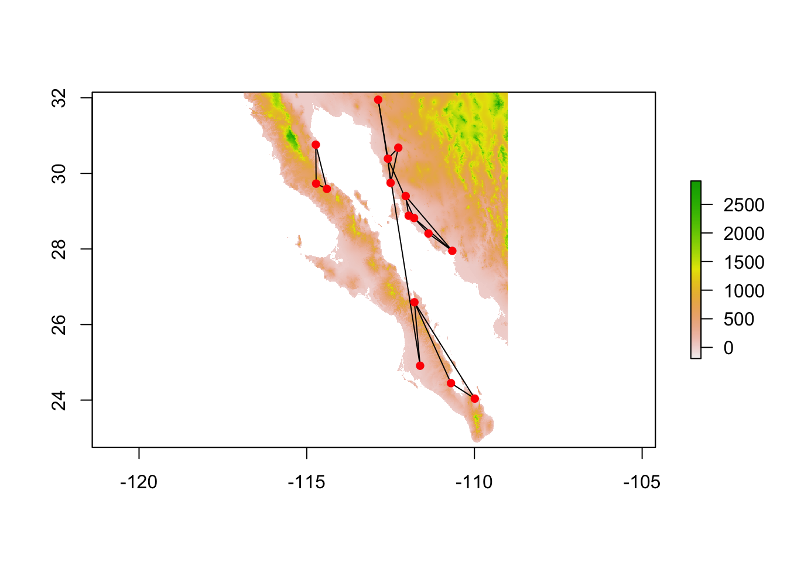
There are several ways to examine ‘congruence’ in graph topologies, of which I show two. The first method is based upon the correlation of pair-wise distance through the graph for each. That is to say, are proximate nodes in lopho similarily close in upiga? This is called “Distance Congruence” and is based upon a non-parametric correlation of path distances.
test_congruence(lopho,upiga,method="distance")##
## Pearson's product-moment correlation
##
## data: distances.graph1 and distances.graph2
## t = 7.3025, df = 118, p-value = 3.6e-11
## alternative hypothesis: true correlation is not equal to 0
## 95 percent confidence interval:
## 0.4207347 0.6701315
## sample estimates:
## cor
## 0.5579029Another way is to ask about the pattern of connectivity. Based upon the number of nodes and edges in lopho and upiga, are there more in the congruence graph than could be expected if the two graph were just randomly associated? This is called “Structural Congruence” and is determined combinatorially. What is returned by this is the probability having as many edges as observed in the congruence graph given the size of the edge sets in the predictor graphs. You can think of this as the fraction of the area under the line as large or larger than the observed.
test_congruence(lopho,upiga, method="combinatorial")## CDF
## 0.03625037Hope this provides enough of an overview of the popgraph package to get you started. If you have any questions feel free to email [mailto://rjdyer@vcu.edu].
This is a truly hypothetical and contrived example to show how you would do this in the code and is not motivated by any biologically motivated reasons. Ya’ gotta make up examples sometimes…↩